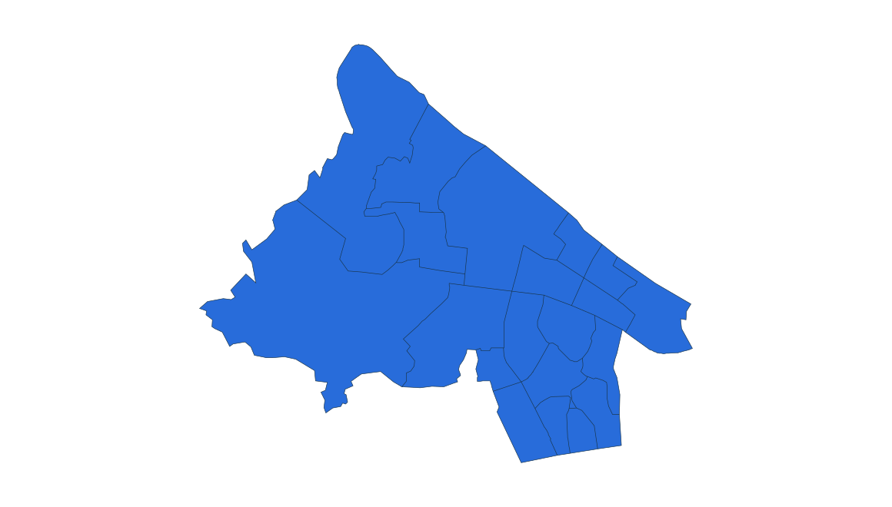
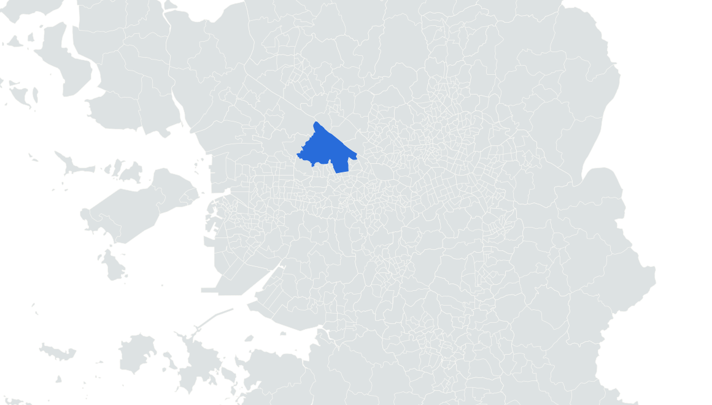

부동산 데이터 | 신혼부부가 사는 곳
4위 서울 강서구
2024.11.1 거주 기준 · 신혼부부 전체 · 단위: 쌍



마곡 서울식물원 야외
실제 장소 자료사진 · 촬영 2026
사진: Tjwlgns · CC BY 4.0
1만 쌍을 넘는 상위 5개 구
01
???
???
02
???
???
03
???
???
04
강서구
10,724
05
부평구
10,204
현재 소개 4위 · 서울 강서구
부평구보다 520쌍 많음
통계: 통계청 「2024년 신혼부부통계」 수도권 구별 집계 | 지도: SGIS · vuski/admdongkor, CC BY 4.0 · 2024 경계